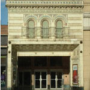
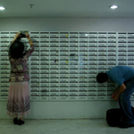
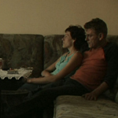

|
In a modest office somewhere in Paris sit Caroline and Colette. Caroline is young, impulsive and hot-tempered. Colette, older, is compassionate and impossibly disorganized. What do these women share in common? They are social workers... |
|  |
For the second consecutive year, the film festival will include an International Student Short Film Competition. |
|  | The luxurious Hotel Diplomat in Jerusalem – once known for its green lawns, elaborate corridors and ‘see-and-be seen’ club – has become an absorption center, a place where time has... |
 |
Twelve-year-old Chang-ho lives in a small town in China along the frozen river that borders North Korea. Despite the constant presence of poverty and hardship in the community that the family calls home, people of the town have remained sympathetic toward... |
 |
Felicia visits her parents in Bucharest one time per year, and each time ends in some sort of disaster. This year, as she escapes from her mother’s nagging and father’s sickness, Felicia is desperate to return to the normalcy of her son. Confronted with one problem after... |
 |
Three years ago, in real-life, Hama Ali, a charismatic B movie actor from Iraq, and Ayca, a similarly rotund but charming actress from Turkey, develop a passionate relationship develop during film production... |
Desperation is the breeding ground for some of humanity’s darkest moments. Mai Anh is a young Vietnamese woman trying to move illegally to Warsaw... |
The Battle for the Dream Imagine that you open your door one day to find police officers standing before you and requesting to see your documentation... |
 |
When her car breaks down on a sightseeing tour of California, a Japanese student finds herself stranded in the small desert town of Littlerock. Exhilarated by a sudden sense of freedom, she extends her stay in the town... |
Imagine constantly imagining that you are going to be deported despite the fact that where you live is your home. That is the fate of three musically-talented Lebanese teenagers... |
 |
Fresh, affecting, and slyly humorous, Rigoberto Perezcano's debut feature is the account of one man’s dogged determination to win a better life... |
 |
Away from the influence of a capitalist market; undergoing 40 years of U.S. economic embargo; and still under the administration of a communist regime; Cubans live in an extreme and unique social situation... |
 |
Sampat Pal Devi is a foul-mouthed self-styled enforcer for the Gulabi Gang (Pink Gang), a group of women who team up to fight the common abuses – forced child marriages, the burning of widows, and the routine beating of women... |
 |
Stavros has been living the life, sitting outside of his convenience store with his three best friends watching other men work, but never really working himself. His days consist of either... |
Andréa, a Brazilian filmmaker living in Amsterdam, begins to explore her and her siblings’ impulse to leave their home country. From hours of conversation, she derives a theme: their mother, who had a psychotic... |
|  | (Warszawa do wziecia) For Ania, Gosia, and Ilona, the thought of moving to the big city of Warsaw means accomplishing the dreams that are unavailable to them in their rural Polish village... |